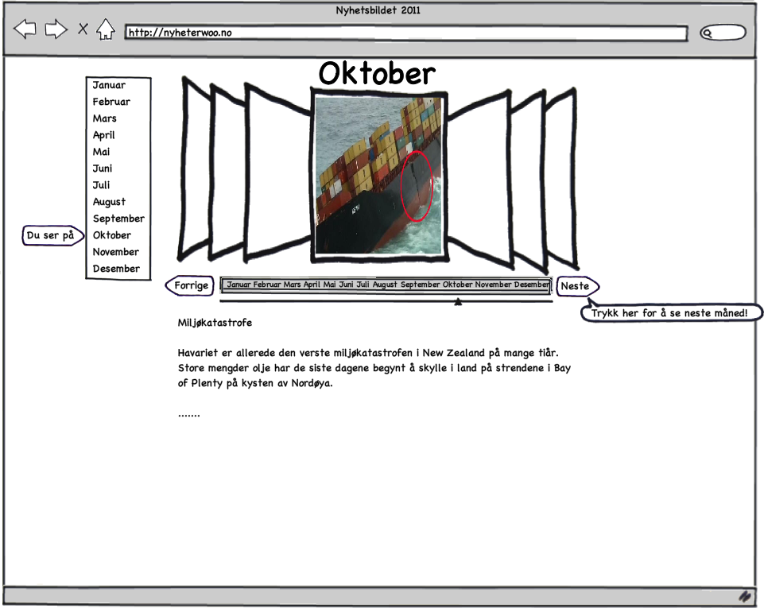

Prosjektbeskrivelse
Formålet med nettsiden er å vise nyhetsbildet 2011 i korte trekk ved bruk av bilder og utdrag fra diverse nyhetssider. Målgruppen er folk som er interessert i samfunnet og nyheter generelt og vil få nyhetene for å året summert opp i korte trekk, ala. “Hvem, hva, hvor”. Utfordringene med dette ligger hovedsaklig i at det er teknisk avansert å utføre samtidig som de større nyhetsidene også har noe ala. “Året i bilder” o.l med sine egen artikler.
Nettsiden skal vise de viktige nyhetshendelsene som har skjedd i året 2011. Innholdet vil bestå av utdrag fra og linker til artikler fra diverse nyhetssider. Det må taes hensyn til opphavsrett men linking og “paraphrasing” av artikler burde ikke være noe problem. Det vil gå under samme kategori som blogging om nyhetssaker (?) Selve siden vil være utformet med en tidslinje der man kan dra en “slider” fra venstre til høyre, Januar - Desember.
Siden vil benytte seg av Javascript/Coffeescript og jQuery på klientsiden og uspesifisert magi på serversiden (Ruby/PHP/Javascript).